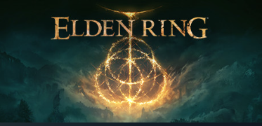
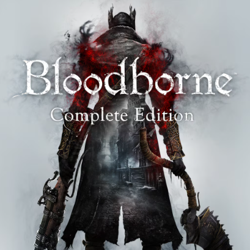

RPG Games
A role-playing game (sometimes spelled roleplaying game, or abbreviated as RPG) is a game in which players assume and play out the roles of characters in a fictional setting. Players take responsibility for acting out these roles within a narrative, either through literal acting or through a process of structured decision-making regarding character development.
There are several forms of role-playing games. The original form, sometimes called the tabletop role-playing game (TRPG or TTRPG), is conducted through discussion, whereas in live action role-playing (LARP), players physically perform their characters' actions.
While RPGs were intially played as board games, their online counterparts have done just as well in telling stories, showcasing character development, and creating vast fantasy worlds. With combat being a integral part of RPGs, developers have been challenged to push out games that build through combat, strategy, and narrative.
Notable Examples
Elden Ring (2022)
Elden Ring introduces you to a bizzare, breathtaking and beautiful world filled with twisted lore in the story. From strange lands and equally strange inhabitants, this earned Elden Ring the title of the "Finest Video Game ever made". The content that this game possesses can attract both newcomers and long-time players of the game.

Bloodborne (2015)
The story begins in Yarnum. A gloomy, somber city that practically looks uninhabitable. The citizens here are suffering through a plague, not only are they suffering through sickness but they are also picked off my dangerous beasts. Despite being one of the most dangerous locations you could ever think of, this game will make you wanna come back for the thrill of a second blow, even after you have defeated the worst of it.
